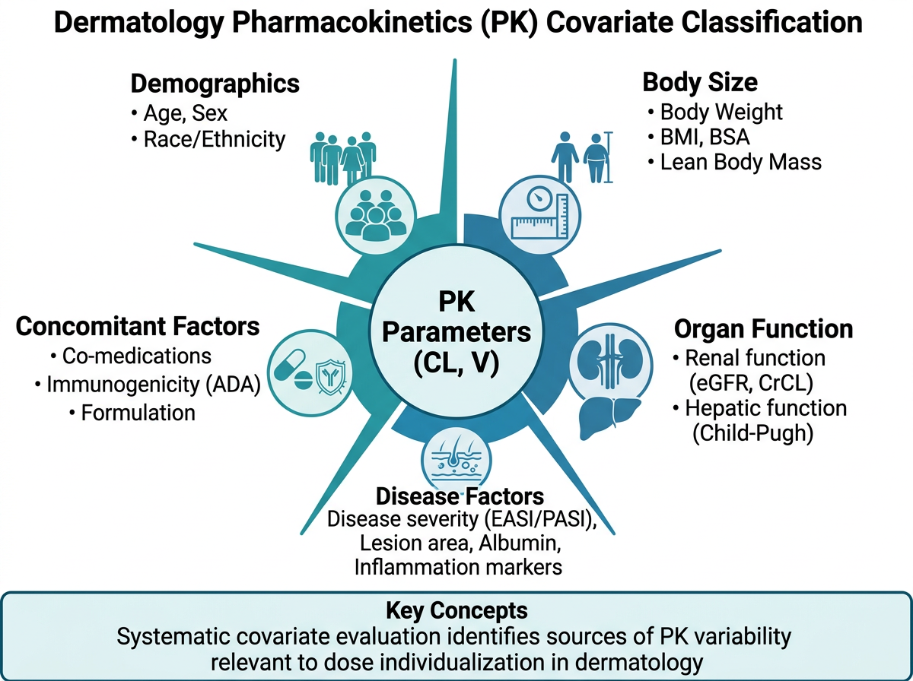
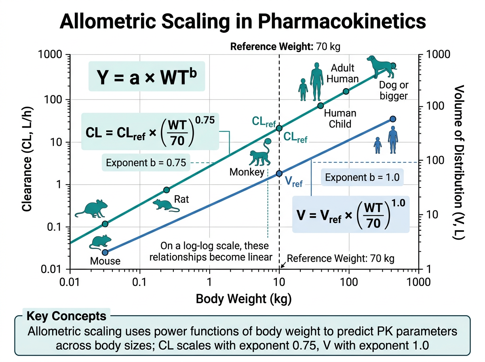
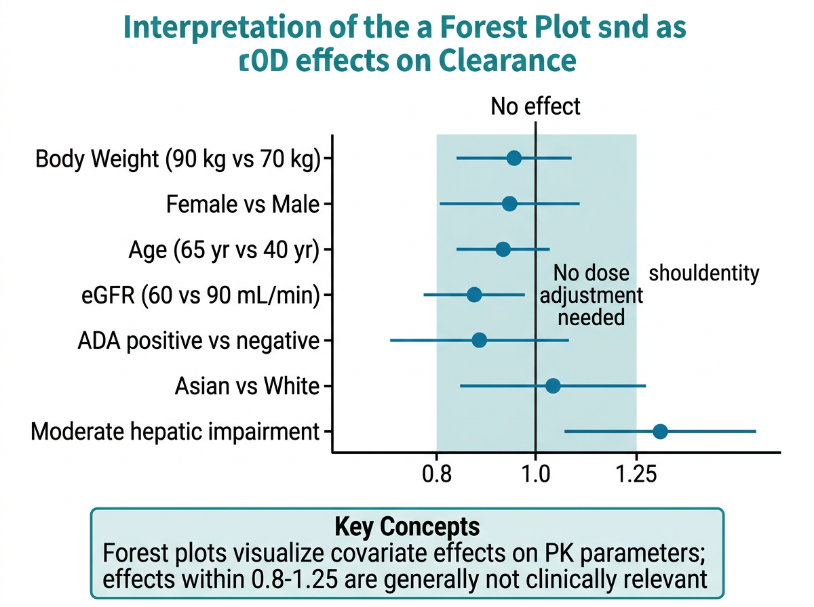

# 이 장에서 사용하는 패키지
library(tidyverse) # 데이터 처리 및 시각화
library(corrplot) # 상관행렬 시각화
library(glmnet) # LASSO 변수 선택
library(ggrepel) # 라벨 겹침 방지
library(patchwork) # 그래프 합성
library(gt) # 출판 품질 테이블
library(gtsummary) # 인구통계학적 요약
library(broom) # 모델 결과 정리14 공변량 탐색과 모델 반영
약동학(PK) 모델링에서 공변량(covariate)은 개체간 변이(Inter-Individual Variability, IIV)를 설명할 수 있는 환자 특성입니다. 같은 약물을 같은 용량으로 투여하더라도 환자마다 혈중 농도가 크게 다른 이유는 무엇일까요? 체중, 나이, 신기능, 유전적 다형성 등 다양한 요인이 약물의 체내 동태에 영향을 미칩니다. 이러한 공변량을 식별하고 모델에 반영하면, 개인 맞춤형 용량 조절(individualized dosing)의 과학적 근거를 제공할 수 있습니다.
이 장에서는 피부과 및 자가면역 질환에서 사용되는 약물을 중심으로, PK 공변량의 개념, 탐색 방법, 모델 반영 전략을 학습합니다. 특히 Adalimumab, Dupilumab, Tofacitinib, Methotrexate, Cyclosporine 등 피부과에서 핵심적인 약물의 공변량 효과를 실제 임상 데이터 분석 관점에서 다룹니다.
14.1 공변량(Covariate)의 개념과 중요성

14.1.1 공변량이란 무엇인가
그림 14.1 에서 보듯이, 집단 약동학(Population PK) 분석에서 공변량은 PK 파라미터(CL, V, ka 등)의 개체간 변이를 설명하는 환자 수준의 특성입니다. 수학적으로 표현하면, 개인 \(i\)의 청소율 \(CL_i\)는 다음과 같이 분해됩니다:
\[CL_i = \theta_{CL} \cdot f(\text{Covariates}_i) \cdot e^{\eta_i}\]
여기서 \(\theta_{CL}\)은 전형적인(typical) 청소율, \(f(\text{Covariates}_i)\)는 공변량 함수, \(\eta_i \sim N(0, \omega^2)\)는 잔여 개체간 변이입니다. 좋은 공변량을 찾아 모델에 반영하면 \(\omega^2\)이 감소하여, 설명되지 않는 변이가 줄어듭니다.
14.1.2 공변량의 유형
PK 분석에서 고려하는 공변량은 크게 다섯 가지 범주로 나뉩니다.
첫째, 인구통계학적(Demographic) 공변량입니다. 나이(AGE), 성별(SEX), 체중(WT), 키(HT), 체질량지수(BMI), 체표면적(BSA), 인종(RACE) 등이 해당됩니다. 이 중 체중은 거의 모든 PK 모델에서 고려되는 가장 기본적인 공변량입니다. 체중이 증가하면 분포용적(V)이 증가하고, 대사 기관의 크기도 커지므로 청소율(CL)도 증가하는 경향이 있습니다.
둘째, 병태생리학적(Pathophysiological) 공변량입니다. 장기 기능 지표가 대표적입니다:
- 신기능: 사구체여과율(eGFR, CKD-EPI 공식), 혈청 크레아티닌(SCR), 크레아티닌 청소율(CLCR, Cockcroft-Gault 공식)
- 간기능: AST, ALT, 총 빌리루빈, 알부민, Child-Pugh score
- 영양 상태: 혈청 알부민, 체중 변화
- 질환 중증도: baseline PASI score, EASI score, IGA score
\[eGFR_{CKD-EPI} = 141 \times \min(SCR/\kappa, 1)^\alpha \times \max(SCR/\kappa, 1)^{-1.209} \times 0.993^{Age} \times [1.018 \text{ if female}]\]
여기서 \(\kappa\)는 여성 0.7, 남성 0.9이고, \(\alpha\)는 여성 -0.329, 남성 -0.411입니다.
셋째, 유전약리학적(Pharmacogenomic) 공변량입니다. 약물대사효소의 유전적 다형성은 약물의 체내 동태에 극적인 차이를 가져올 수 있습니다:
- CYP2C19: Tofacitinib 대사에 관여. Poor metabolizer(PM)는 extensive metabolizer(EM) 대비 AUC가 약 1.5배 증가
- CYP3A4/5: Cyclosporine, Tacrolimus 대사의 주요 경로
- TPMT: Azathioprine 대사. TPMT 활성 저하 시 골수억제 위험 현저히 증가
- MTHFR: Methotrexate 반응성과 관련
넷째, 면역학적(Immunological) 공변량입니다. 생물학적 제제(biologics)에서 특히 중요합니다:
- 항약물항체(Anti-Drug Antibody, ADA): ADA 양성 시 청소율 증가, 유효 농도 감소
- Baseline 사이토카인 수치: TNF-α, IL-17, IL-4/IL-13 등
- Baseline IgE: Dupilumab 반응 예측 인자
다섯째, 피부과 질환 특이적 공변량입니다:
- Baseline 질환 중증도: PASI (건선), EASI (아토피 피부염), DLQI (삶의 질)
- 이전 치료 이력: 생물학적 제제 사전 노출(bio-experienced vs bio-naive)
- 질환 이환 기간: 장기 이환 시 치료 반응 저하 가능성
- 동반 질환: 건선 관절염 동반, 대사증후군
노트시간 의존적 공변량 vs 시간 불변 공변량
공변량은 시간에 따른 변화 여부에 따라 분류됩니다. 시간 불변(time-invariant) 공변량은 성별, 인종, 유전형 등 연구 기간 동안 변하지 않는 특성입니다. 시간 의존적(time-varying) 공변량은 체중, 알부민, eGFR, ADA 상태, 질환 중증도(PASI/EASI) 등 시간에 따라 변할 수 있는 특성입니다. 시간 의존적 공변량은 모델링 시 각 관측 시점의 값을 반영해야 하므로 데이터 준비와 모델 구현이 더 복잡합니다.
14.1.3 공변량 분석의 목적
공변량 분석은 단순한 통계적 유의성 검증이 아닙니다. 궁극적인 목적은 다음과 같습니다:
- 개인 맞춤형 용량 조절: 환자 특성에 따라 초기 용량을 최적화
- 특수 집단 권고사항: 신장애, 간장애, 고령, 소아 등에서의 용량 조절 근거 제공
- 약물 라벨링(Labeling): 허가사항에 공변량 기반 용량 권고 반영
- 임상시험 설계: 하위 집단 분석, 층화(stratification) 기준 수립
- 약물 상호작용 예측: CYP 유전형에 따른 병용약 효과 예측
중요통계적 유의성 vs 임상적 관련성
공변량 분석에서 가장 빠지기 쉬운 함정은 통계적 유의성(statistical significance)과 임상적 관련성(clinical relevance)을 혼동하는 것입니다. 대규모 데이터셋에서는 매우 작은 효과도 통계적으로 유의할 수 있습니다. 예를 들어, 나이가 CL에 통계적으로 유의한 영향을 미치더라도, 그 효과 크기가 파라미터의 5% 미만이라면 임상적으로 용량 조절을 정당화하기 어렵습니다. FDA 가이드라인에서는 일반적으로 파라미터 변화가 20% 이상일 때 임상적으로 의미 있는 공변량 효과로 간주합니다.
14.2 Allometric Scaling

14.2.1 체중 기반 파라미터 조정의 원리
그림 14.2 에서 보듯이, allometric scaling은 체중(WT)과 PK 파라미터 사이의 생물학적 관계를 모델에 반영하는 방법입니다. 이는 포유류 종 간의 대사율이 체중의 \(3/4\) 승에 비례한다는 Kleiber’s law에 기반합니다.
\[CL = CL_{ref} \times \left(\frac{WT}{WT_{ref}}\right)^{0.75}\]
\[V = V_{ref} \times \left(\frac{WT}{WT_{ref}}\right)^{1.0}\]
여기서 \(CL_{ref}\)와 \(V_{ref}\)는 참조 체중(\(WT_{ref}\), 보통 70 kg)에서의 전형적인(typical) 파라미터 값입니다. 청소율(CL)에는 0.75 지수(exponent)를, 분포용적(V)에는 1.0 지수를 적용합니다.
이 지수의 생물학적 근거는 다음과 같습니다:
- CL ~ WT0.75: 대사 기관(간, 신장)의 기능적 용량은 체중에 정비례하지 않고, 체표면적에 더 가깝게 비례합니다. 체표면적은 대략 체중의 \(2/3\) 승에 비례하며, 실증적으로 \(3/4\) 승이 가장 잘 맞는 것으로 알려져 있습니다.
- V ~ WT1.0: 분포용적은 체액량에 비례하며, 체액량은 체중에 대략 정비례합니다.
# Allometric scaling 구현
# 참조 체중 70 kg 기준
pk_data <- pk_data |>
mutate(
# 청소율에 대한 allometric scaling
CL_scaled = CL_ref * (WT / 70)^0.75,
# 분포용적에 대한 allometric scaling
V_scaled = V_ref * (WT / 70)^1.0,
# 또는 체표면적(BSA) 기반 (DuBois 공식)
BSA = 0.007184 * HT^0.725 * WT^0.425
)
# 체중과 CL의 관계 시각화
ggplot(pk_data, aes(x = WT, y = CL)) +
geom_point(alpha = 0.6) +
# Allometric 곡선 추가
stat_function(
fun = function(x) CL_ref * (x / 70)^0.75,
color = "red", linewidth = 1.2
) +
labs(
x = "체중 (kg)",
y = "청소율 (L/h)",
title = "Allometric Scaling: CL vs 체중"
) +
theme_bw()14.2.2 체표면적(BSA) 기반 용량 조절
일부 약물은 체중보다 체표면적(BSA)이 더 적절한 용량 기준입니다. 대표적으로 Methotrexate 고용량 요법에서 BSA 기반 용량(mg/m²)이 사용됩니다.
\[BSA_{DuBois} = 0.007184 \times HT^{0.725} \times WT^{0.425}\]
\[BSA_{Mosteller} = \sqrt{\frac{HT \times WT}{3600}}\]
여기서 HT는 키(cm), WT는 체중(kg)입니다.
# BSA 계산 함수
calc_bsa_dubois <- function(ht_cm, wt_kg) {
0.007184 * ht_cm^0.725 * wt_kg^0.425
}
calc_bsa_mosteller <- function(ht_cm, wt_kg) {
sqrt(ht_cm * wt_kg / 3600)
}
# 예시: Methotrexate 15 mg/m² 용량 계산
patient <- tibble(
ID = 1:5,
HT = c(165, 172, 158, 180, 155),
WT = c(65, 78, 52, 90, 48)
) |>
mutate(
BSA = calc_bsa_dubois(HT, WT),
MTX_dose_mg = round(15 * BSA, 1) # 15 mg/m² 기준
)14.2.3 소아와 성인의 PK 차이
소아에서는 allometric scaling이 더욱 중요합니다. 소아는 성인과 비교하여 다음과 같은 PK 특성을 보입니다:
- 신생아/영아: CYP 효소 미성숙으로 대사 능력 저하 → 체중 보정 CL이 성인보다 낮음
- 소아(2-12세): 체중 보정 CL이 오히려 성인보다 높을 수 있음 (간 무게/체중 비율이 큼)
- 청소년: 성인과 유사한 PK 특성
힌트Allometric scaling을 먼저 적용하는 전략
최근 FDA와 EMA에서는 집단 PK 모델링 시 allometric scaling을 사전에(a priori) 고정하고, 추가적인 공변량 효과를 탐색하는 접근을 권장합니다. 체중의 allometric 효과는 거의 보편적으로 인정되므로, 이를 먼저 모델에 반영한 후 잔여 변이를 설명하는 다른 공변량을 탐색하는 것이 더 효율적입니다.
14.3 공변량 탐색 방법
14.3.1 그래프 기반 탐색 (Graphical Approach)
공변량 탐색의 첫 번째 단계는 시각적 탐색입니다. 개체별 PK 파라미터 추정값(또는 사후 추정치, empirical Bayes estimate)의 랜덤 효과(\(\eta\), ETA)를 공변량에 대해 산점도로 나타냅니다.
# 시뮬레이션: 공변량 탐색용 데이터 생성
set.seed(42)
n_patients <- 200
cov_data <- tibble(
ID = 1:n_patients,
WT = rlnorm(n_patients, log(70), 0.25),
AGE = round(rnorm(n_patients, 45, 15)),
SEX = sample(c("M", "F"), n_patients, replace = TRUE),
EGFR = rnorm(n_patients, 90, 25),
ALB = rnorm(n_patients, 4.0, 0.5),
ADA = sample(c("Negative", "Positive"), n_patients,
replace = TRUE, prob = c(0.7, 0.3)),
BPASI = rlnorm(n_patients, log(15), 0.5),
CYP2C19 = sample(c("EM", "IM", "PM"), n_patients,
replace = TRUE, prob = c(0.6, 0.3, 0.1))
) |>
mutate(
# 청소율의 "참값" 생성 (공변량 효과 포함)
CL_true = 0.5 * (WT / 70)^0.75 *
(EGFR / 90)^0.3 *
ifelse(ADA == "Positive", 1.4, 1.0) *
exp(rnorm(n_patients, 0, 0.2)),
# ETA (잔여 랜덤 효과)
ETA_CL = log(CL_true) - log(0.5 * (WT / 70)^0.75)
)# ETA vs 연속형 공변량 산점도 (LOESS 추가)
continuous_covs <- c("WT", "AGE", "EGFR", "ALB", "BPASI")
eta_plots <- map(continuous_covs, function(cov_name) {
ggplot(cov_data, aes(x = .data[[cov_name]], y = ETA_CL)) +
geom_point(alpha = 0.4, color = "steelblue") +
geom_smooth(method = "loess", se = TRUE, color = "red",
linewidth = 1) +
geom_hline(yintercept = 0, linetype = "dashed", color = "gray40") +
labs(
x = cov_name,
y = expression(eta[CL]),
title = paste("ETA_CL vs", cov_name)
) +
theme_bw(base_size = 11)
})
# patchwork으로 합성
(eta_plots[[1]] + eta_plots[[2]] + eta_plots[[3]]) /
(eta_plots[[4]] + eta_plots[[5]] + plot_spacer())ETA vs 공변량 산점도에서 LOESS 곡선이 수평(0에 가까운)이면 해당 공변량의 효과가 없음을 시사합니다. 반대로 뚜렷한 기울기나 비선형 패턴이 관찰되면 공변량 효과가 있을 가능성이 높습니다.
# ETA vs 범주형 공변량 boxplot
categorical_covs <- c("SEX", "ADA", "CYP2C19")
cat_plots <- map(categorical_covs, function(cov_name) {
ggplot(cov_data, aes(x = .data[[cov_name]], y = ETA_CL,
fill = .data[[cov_name]])) +
geom_boxplot(alpha = 0.7, outlier.alpha = 0.3) +
geom_jitter(width = 0.15, alpha = 0.2, size = 1) +
geom_hline(yintercept = 0, linetype = "dashed", color = "gray40") +
labs(
x = cov_name,
y = expression(eta[CL]),
title = paste("ETA_CL by", cov_name)
) +
theme_bw(base_size = 11) +
theme(legend.position = "none")
})
cat_plots[[1]] + cat_plots[[2]] + cat_plots[[3]]14.3.2 상관관계 분석 (Correlation Analysis)
연속형 공변량 간의 상관관계를 파악하는 것은 다중공선성(multicollinearity) 문제를 예방하는 데 중요합니다. 예를 들어, 체중과 BMI, 체중과 BSA는 높은 상관관계를 가지므로 동시에 모델에 포함하면 안 됩니다.
# 연속형 공변량 상관행렬
cor_matrix <- cov_data |>
select(WT, AGE, EGFR, ALB, BPASI) |>
cor(use = "pairwise.complete.obs")
# corrplot으로 시각화
corrplot(
cor_matrix,
method = "color", # 색상으로 표현
type = "upper", # 상삼각 행렬만
addCoef.col = "black", # 상관계수 텍스트 색상
tl.col = "black", # 변수명 색상
tl.srt = 45, # 변수명 회전 각도
number.cex = 0.8, # 상관계수 크기
diag = FALSE, # 대각선 제외
col = colorRampPalette(c("#2166AC", "white", "#B2182B"))(200),
title = "공변량 상관행렬",
mar = c(0, 0, 2, 0)
)
경고다중공선성 주의
상관계수가 0.7 이상인 공변량 쌍은 다중공선성 가능성이 높습니다. 예를 들어:
- 체중과 BMI (r > 0.8): 둘 다 포함하면 모수 추정이 불안정해짐
- SCR과 eGFR (r ≈ -0.9): eGFR이 SCR로부터 계산되므로 완전한 중복
- AST와 ALT (r > 0.7): 간기능 지표로서 유사한 정보를 제공
이 경우 임상적으로 더 의미 있거나 측정이 더 표준화된 공변량을 선택합니다.
14.3.3 통계적 방법: Stepwise Selection
전통적인 공변량 선택 방법은 전진 선택(forward selection)과 후진 제거(backward elimination)를 결합한 단계적 접근(stepwise approach)입니다.
- 전진 선택(Forward Selection):
- 공변량이 없는 기본 모델(base model)에서 시작
- 각 공변량을 하나씩 추가하며 목적함수값(OFV) 변화를 확인
- \(\Delta OFV > 3.84\) (\(p < 0.05\), \(\chi^2\), df=1)인 공변량을 포함
- 가장 큰 OFV 감소를 보이는 공변량을 먼저 포함
- 후진 제거(Backward Elimination):
- 전진 선택에서 포함된 모든 공변량이 있는 모델에서 시작
- 공변량을 하나씩 제거하며 OFV 변화를 확인
- \(\Delta OFV < 6.63\) (\(p < 0.01\), \(\chi^2\), df=1)인 공변량을 제거
- 더 엄격한 기준으로 최종 모델의 과적합(overfitting)을 방지
노트OFV 변화량과 p-value의 관계
NONMEM 등에서 사용하는 목적함수값(Objective Function Value, OFV)은 \(-2 \times \log(\text{likelihood})\)입니다. 중첩 모델(nested model) 비교에서 \(\Delta OFV\)는 자유도가 추가된 파라미터 수인 \(\chi^2\) 분포를 따릅니다:
| \(\Delta OFV\) | 자유도 | p-value | 사용 단계 |
|---|---|---|---|
| 3.84 | 1 | 0.05 | 전진 선택 |
| 6.63 | 1 | 0.01 | 후진 제거 |
| 7.88 | 1 | 0.005 | 보수적 기준 |
| 10.83 | 1 | 0.001 | 매우 보수적 |
후진 제거에서 더 엄격한 기준을 사용하는 이유는, 전진 선택에서 우연히 유의하게 나온 공변량을 걸러내기 위함입니다.
14.3.4 LASSO를 활용한 변수 선택
최근에는 LASSO (Least Absolute Shrinkage and Selection Operator) 기반 변수 선택이 점점 더 많이 사용됩니다. LASSO는 회귀 계수에 L1 벌칙(penalty)을 부과하여, 중요하지 않은 공변량의 계수를 정확히 0으로 축소합니다.
\[\hat{\beta}_{LASSO} = \arg\min_\beta \left\{ \sum_{i=1}^{n} (y_i - X_i \beta)^2 + \lambda \sum_{j=1}^{p} |\beta_j| \right\}\]
여기서 \(\lambda\)는 벌칙 강도를 조절하는 튜닝 파라미터입니다. \(\lambda\)가 커질수록 더 많은 계수가 0이 되어 더 간결한 모델이 선택됩니다.
# LASSO를 활용한 공변량 선택
# 종속변수: log(CL), 독립변수: 공변량들
# 디자인 행렬 준비 (범주형 변수를 더미 코딩)
x_matrix <- model.matrix(
~ WT + AGE + EGFR + ALB + BPASI + SEX + ADA + CYP2C19 - 1,
data = cov_data
)
y_vector <- log(cov_data$CL_true)
# LASSO 적합 (교차검증으로 최적 lambda 선택)
cv_fit <- cv.glmnet(
x = x_matrix,
y = y_vector,
alpha = 1, # 1 = LASSO, 0 = Ridge, 0-1 = Elastic Net
nfolds = 10, # 10-fold 교차검증
type.measure = "mse"
)
# 교차검증 결과 시각화
plot(cv_fit)
# 최적 lambda에서의 계수
coef_min <- coef(cv_fit, s = "lambda.min") # MSE 최소화
coef_1se <- coef(cv_fit, s = "lambda.1se") # 1 SE rule (더 간결)
# 0이 아닌 계수만 추출
selected_covs <- rownames(coef_1se)[which(coef_1se[, 1] != 0)]
cat("선택된 공변량:", selected_covs, "\n")# LASSO 경로 시각화
fit_lasso <- glmnet(x_matrix, y_vector, alpha = 1)
# 계수 경로 플롯
plot(fit_lasso, xvar = "lambda", label = TRUE)
abline(v = log(cv_fit$lambda.min), lty = 2, col = "red")
abline(v = log(cv_fit$lambda.1se), lty = 2, col = "blue")
legend("topright",
legend = c("lambda.min", "lambda.1se"),
col = c("red", "blue"), lty = 2)14.3.5 임상적 관련성 기반 선택
통계적 방법에만 의존하면 임상적으로 의미 없는 공변량이 선택되거나, 중요한 공변량이 누락될 수 있습니다. 따라서 임상적 지식에 기반한 공변량 선택이 함께 고려되어야 합니다.
예를 들어, Methotrexate의 PK 모델에서 eGFR은 반드시 고려해야 하는 공변량입니다. 이는 Methotrexate의 약 80-90%가 신장으로 배설되기 때문이며, 통계적 유의성과 무관하게 약리학적 근거만으로 모델에 포함시킬 수 있습니다.
FDA에서는 공변량 선택 시 다음 원칙을 권장합니다:
- 생물학적 타당성(Biological plausibility): 약물의 ADME 경로에 근거한 공변량
- 임상적 중요성(Clinical significance): 용량 조절 결정에 영향을 미치는 수준의 효과
- 측정 가능성(Measurability): 임상 현장에서 실제로 측정 가능한 지표
- 데이터 가용성(Data availability): 충분한 표본 크기와 결측이 적은 공변량
14.4 특수 집단에서의 용량 조절
14.4.1 신장애 환자
신장 배설이 중요한 약물에서 eGFR(또는 CLCR)은 핵심 공변량입니다. Methotrexate와 Tofacitinib이 대표적입니다.
Methotrexate: 투여량의 80-90%가 신장을 통해 미변화체로 배설됩니다. eGFR이 감소하면 Methotrexate의 청소율이 직접적으로 감소하고, 혈중 농도가 상승하여 골수억제, 점막염, 간독성 등의 위험이 증가합니다.
\[CL_{MTX} \approx CL_{renal} + CL_{nonrenal} \approx f_{renal} \cdot GFR + CL_{nonrenal}\]
| eGFR (mL/min/1.73m²) | 신기능 분류 | Methotrexate 용량 조절 |
|---|---|---|
| ≥ 90 | 정상 | 용량 조절 불필요 |
| 60-89 | 경도 신장애 | 용량 조절 불필요 (모니터링 권장) |
| 30-59 | 중등도 신장애 | 50% 감량 또는 사용 금기 |
| 15-29 | 중증 신장애 | 사용 금기 |
| < 15 | 신부전 | 절대 금기 |
Tofacitinib: 약 30%가 신장으로 배설됩니다. 중등도~중증 신장애(eGFR < 60) 환자에서는 1일 2회 5mg에서 1일 2회 5mg → 1일 1회 5mg으로 감량이 권장됩니다. eGFR이 40 mL/min/1.73m²인 환자에서 AUC가 정상 신기능 대비 약 1.4배 증가한다는 PK 데이터가 근거입니다.
14.4.2 간장애 환자
간대사가 주된 소실 경로인 약물에서는 간기능이 핵심 공변량입니다. 간기능 평가에는 주로 Child-Pugh score가 사용됩니다.
| 항목 | 1점 | 2점 | 3점 |
|---|---|---|---|
| 뇌증(Encephalopathy) | 없음 | 경도(1-2기) | 중증(3-4기) |
| 복수(Ascites) | 없음 | 경도 | 중등도-중증 |
| 빌리루빈(mg/dL) | < 2 | 2-3 | > 3 |
| 알부민(g/dL) | > 3.5 | 2.8-3.5 | < 2.8 |
| PT 연장(초) | < 4 | 4-6 | > 6 |
- Child-Pugh A (5-6점): 경도 간장애
- Child-Pugh B (7-9점): 중등도 간장애
- Child-Pugh C (10-15점): 중증 간장애
Apremilast: CYP3A4 대사가 주된 소실 경로입니다. Child-Pugh C 환자에서 AUC가 정상 간기능 대비 약 2배 증가합니다. 중증 간장애에서는 1일 1회 30mg으로 감량이 권장됩니다.
14.4.3 고령자
나이는 CL과 V 모두에 영향을 미칠 수 있습니다. 고령자에서는:
- 신기능 저하: 나이에 따른 GFR 감소 (약 10년당 10 mL/min 감소)
- 간 혈류량 감소: 고령에서 간 혈류량이 20-40% 감소
- 체성분 변화: 지방 조직 증가, 수분량 감소 → 분포용적 변화
- 혈장 단백질 변화: 알부민 감소 → 유리형 약물 농도 증가
# 나이에 따른 CL 변화 시각화
age_effect <- tibble(
AGE = 20:90,
CL_relative = 1.0 * (AGE / 45)^(-0.3) # 나이 효과 가정
)
ggplot(age_effect, aes(x = AGE, y = CL_relative)) +
geom_line(color = "steelblue", linewidth = 1.2) +
geom_hline(yintercept = 1.0, linetype = "dashed") +
geom_vline(xintercept = 65, linetype = "dotted", color = "red") +
annotate("text", x = 67, y = 1.05, label = "고령자 기준 (65세)",
hjust = 0, color = "red") +
labs(
x = "나이 (세)",
y = "상대적 청소율 (CL/CL_ref)",
title = "나이에 따른 청소율 변화"
) +
scale_y_continuous(limits = c(0.5, 1.5)) +
theme_bw()14.4.4 비만/저체중: 생물학적 제제에서의 체중 영향
생물학적 제제(monoclonal antibodies)에서 체중은 가장 중요한 공변량 중 하나입니다. 항체 약물은 분자량이 크고(~150 kDa), 분포가 주로 혈관과 간질액에 국한되므로, 체중(특히 제지방 체중)에 따라 분포용적이 변합니다.
Dupilumab: 체중이 주요 공변량으로, 고체중(≥100 kg) 환자에서 Ctrough가 약 30% 낮아집니다. 이는 고체중 환자에서 투여 간격 단축(Q2W → QW) 또는 용량 증량을 고려해야 하는 근거가 됩니다.
Adalimumab: 체중과 ADA 상태가 CL의 주요 공변량입니다. 체중 80 kg인 환자는 60 kg 환자 대비 CL이 약 20% 높고, 이에 따라 Ctrough가 낮아져 치료 반응률이 저하될 수 있습니다.
# 생물학적 제제에서 체중에 따른 Ctrough 시뮬레이션
set.seed(123)
n_sim <- 500
biologic_sim <- tibble(
ID = 1:n_sim,
WT = rlnorm(n_sim, log(75), 0.3)
) |>
mutate(
WT_group = case_when(
WT < 60 ~ "< 60 kg",
WT < 80 ~ "60-80 kg",
WT < 100 ~ "80-100 kg",
TRUE ~ "≥ 100 kg"
),
WT_group = factor(WT_group, levels = c("< 60 kg", "60-80 kg",
"80-100 kg", "≥ 100 kg")),
# Dupilumab Ctrough 시뮬레이션 (체중 효과 포함)
CL = 0.35 * (WT / 70)^0.75 * exp(rnorm(n_sim, 0, 0.3)),
Ctrough = 300 * (0.35 / CL) * exp(rnorm(n_sim, 0, 0.15))
)
# 체중군별 Ctrough 분포
ggplot(biologic_sim, aes(x = WT_group, y = Ctrough, fill = WT_group)) +
geom_boxplot(alpha = 0.7) +
geom_jitter(width = 0.15, alpha = 0.15, size = 0.8) +
geom_hline(yintercept = 100, linetype = "dashed", color = "red") +
annotate("text", x = 4.3, y = 105, label = "목표 Ctrough",
color = "red", hjust = 0) +
labs(
x = "체중군",
y = "Ctrough (mg/L)",
title = "체중군별 Dupilumab Ctrough 분포"
) +
theme_bw() +
theme(legend.position = "none")14.4.5 면역원성: ADA 양성 환자에서의 청소율 증가
생물학적 제제에서 면역원성(immunogenicity)은 청소율에 큰 영향을 미치는 시간 의존적 공변량입니다. ADA가 형성되면 약물-항체 복합체가 만들어져 FcRn 재활용(recycling) 경로가 차단되고, 청소율이 증가합니다.
\[CL_{ADA+} = CL_{ADA-} \times \theta_{ADA}\]
여기서 \(\theta_{ADA}\)는 일반적으로 1.3-2.0 범위의 값을 가집니다. Adalimumab에서 ADA 양성 환자의 CL은 ADA 음성 대비 약 1.5-2배 증가하는 것으로 보고되었습니다.
중요ADA와 치료 실패의 악순환
ADA 형성은 다음과 같은 악순환을 유발할 수 있습니다:
- ADA 형성 → 청소율 증가 → 약물 농도 감소
- 낮은 약물 농도 → 불완전한 표적 억제 → 치료 반응 저하
- 저농도 지속 → 추가 ADA 형성 촉진 (면역 관용 유지 실패)
- 높은 ADA 역가 → 더 심한 청소율 증가 → 치료 실패
따라서 생물학적 제제의 TDM에서는 약물 농도와 ADA를 동시에 측정하는 것이 중요합니다.
14.5 R 실습: 공변량 탐색과 분석
14.5.1 공변량 요약 통계 및 분포 그래프
먼저 공변량의 분포를 파악하고 요약 통계를 생성합니다.
# 시뮬레이션 데이터 생성 (피부과 PK 연구)
set.seed(2024)
n <- 250
pk_cov_data <- tibble(
ID = 1:n,
WT = round(rlnorm(n, log(68), 0.25), 1),
AGE = round(pmin(pmax(rnorm(n, 42, 14), 18), 80)),
HT = round(rnorm(n, 167, 9), 1),
SEX = sample(c("M", "F"), n, replace = TRUE, prob = c(0.45, 0.55)),
RACE = sample(c("Asian", "White", "Black", "Other"), n,
replace = TRUE, prob = c(0.5, 0.3, 0.1, 0.1)),
EGFR = round(pmax(rnorm(n, 92, 22), 15)),
ALB = round(rnorm(n, 4.1, 0.45), 1),
AST = round(rlnorm(n, log(22), 0.35)),
ALT = round(rlnorm(n, log(20), 0.4)),
BPASI = round(rlnorm(n, log(14), 0.5), 1),
ADA = sample(c("Negative", "Positive"), n,
replace = TRUE, prob = c(0.72, 0.28)),
BIO_NAIVE = sample(c("Yes", "No"), n,
replace = TRUE, prob = c(0.6, 0.4)),
DIS_DUR = round(pmax(rlnorm(n, log(8), 0.7), 0.5), 1),
CYP2C19 = sample(c("EM", "IM", "PM"), n,
replace = TRUE, prob = c(0.55, 0.35, 0.10))
) |>
mutate(
BMI = round(WT / (HT / 100)^2, 1),
BSA = round(0.007184 * HT^0.725 * WT^0.425, 2)
)# gtsummary를 활용한 인구통계학적 요약표
pk_cov_data |>
select(AGE, SEX, WT, HT, BMI, BSA, RACE, EGFR, ALB,
AST, ALT, BPASI, ADA, BIO_NAIVE, DIS_DUR, CYP2C19) |>
tbl_summary(
type = list(
all_continuous() ~ "continuous2"
),
statistic = list(
all_continuous() ~ c("{mean} ({sd})",
"{median} ({p25}, {p75})",
"{min} - {max}")
),
label = list(
AGE ~ "나이 (세)",
SEX ~ "성별",
WT ~ "체중 (kg)",
HT ~ "키 (cm)",
BMI ~ "BMI (kg/m²)",
BSA ~ "BSA (m²)",
RACE ~ "인종",
EGFR ~ "eGFR (mL/min/1.73m²)",
ALB ~ "알부민 (g/dL)",
AST ~ "AST (U/L)",
ALT ~ "ALT (U/L)",
BPASI ~ "Baseline PASI",
ADA ~ "ADA 상태",
BIO_NAIVE ~ "생물학적제제 미경험",
DIS_DUR ~ "질환 이환 기간 (년)",
CYP2C19 ~ "CYP2C19 표현형"
)
) |>
bold_labels()# 연속형 공변량 분포 히스토그램
hist_vars <- c("WT", "AGE", "EGFR", "ALB", "BPASI", "BMI")
hist_labels <- c("체중 (kg)", "나이 (세)", "eGFR (mL/min/1.73m²)",
"알부민 (g/dL)", "Baseline PASI", "BMI (kg/m²)")
hist_plots <- map2(hist_vars, hist_labels, function(var, lab) {
ggplot(pk_cov_data, aes(x = .data[[var]])) +
geom_histogram(aes(y = after_stat(density)),
bins = 25, fill = "steelblue", alpha = 0.7,
color = "white") +
geom_density(color = "darkred", linewidth = 0.8) +
labs(x = lab, y = "밀도") +
theme_bw(base_size = 10)
})
# patchwork 합성
(hist_plots[[1]] + hist_plots[[2]] + hist_plots[[3]]) /
(hist_plots[[4]] + hist_plots[[5]] + hist_plots[[6]]) +
plot_annotation(title = "공변량 분포")14.5.2 corrplot: 연속형 공변량 상관행렬
# 연속형 공변량 상관행렬 시각화
cont_vars <- pk_cov_data |>
select(WT, AGE, HT, BMI, BSA, EGFR, ALB, AST, ALT, BPASI, DIS_DUR)
# Spearman 상관계수 (비정규 분포 데이터에 적합)
cor_spearman <- cor(cont_vars, method = "spearman",
use = "pairwise.complete.obs")
# 시각화
corrplot(
cor_spearman,
method = "ellipse",
type = "lower",
addCoef.col = "black",
number.cex = 0.6,
tl.col = "black",
tl.cex = 0.8,
tl.srt = 45,
diag = FALSE,
col = colorRampPalette(c("#2166AC", "#67A9CF", "white",
"#EF8A62", "#B2182B"))(200),
title = "공변량 간 Spearman 상관계수",
mar = c(0, 0, 2, 0)
)14.5.3 ETA vs covariate 산점도 생성
실제 PopPK 분석에서는 NONMEM 출력 파일에서 ETA 값을 추출합니다. 여기서는 시뮬레이션으로 ETA를 생성하여 탐색 과정을 연습합니다.
# ETA 시뮬레이션 (공변량 효과가 포함된 잔여 변이)
pk_cov_data <- pk_cov_data |>
mutate(
# CL에 대한 ETA (체중, eGFR, ADA의 영향이 남아있다고 가정)
ETA_CL = 0.3 * scale(log(WT))[,1] +
0.25 * scale(EGFR)[,1] +
ifelse(ADA == "Positive", 0.3, 0) +
rnorm(n, 0, 0.2),
# V에 대한 ETA (체중의 영향이 남아있다고 가정)
ETA_V = 0.4 * scale(log(WT))[,1] +
rnorm(n, 0, 0.15)
)
# ETA vs 연속형 공변량 산점도 (LOESS 곡선 포함)
create_eta_scatter <- function(data, eta_var, cov_var,
eta_label, cov_label) {
ggplot(data, aes(x = .data[[cov_var]], y = .data[[eta_var]])) +
geom_point(alpha = 0.3, color = "gray30", size = 1.5) +
geom_smooth(method = "loess", se = TRUE,
color = "#E41A1C", fill = "#E41A1C",
alpha = 0.15, linewidth = 1) +
geom_hline(yintercept = 0, linetype = "dashed",
color = "gray50", linewidth = 0.5) +
labs(x = cov_label, y = eta_label) +
theme_bw(base_size = 10) +
theme(plot.margin = margin(5, 5, 5, 5))
}
# CL에 대한 ETA 산점도
p1 <- create_eta_scatter(pk_cov_data, "ETA_CL", "WT",
expression(eta[CL]), "체중 (kg)")
p2 <- create_eta_scatter(pk_cov_data, "ETA_CL", "AGE",
expression(eta[CL]), "나이 (세)")
p3 <- create_eta_scatter(pk_cov_data, "ETA_CL", "EGFR",
expression(eta[CL]), "eGFR")
p4 <- create_eta_scatter(pk_cov_data, "ETA_CL", "ALB",
expression(eta[CL]), "알부민 (g/dL)")
p5 <- create_eta_scatter(pk_cov_data, "ETA_CL", "BPASI",
expression(eta[CL]), "Baseline PASI")
p6 <- create_eta_scatter(pk_cov_data, "ETA_CL", "BMI",
expression(eta[CL]), "BMI (kg/m²)")
(p1 + p2 + p3) / (p4 + p5 + p6) +
plot_annotation(title = "ETA_CL vs 연속형 공변량")14.5.4 범주형 공변량별 PK 파라미터 비교
# 범주형 공변량별 ETA 비교 (boxplot + 통계 검정)
create_eta_boxplot <- function(data, eta_var, cat_var,
eta_label, cat_label) {
# Kruskal-Wallis 또는 Wilcoxon 검정
groups <- unique(data[[cat_var]])
if (length(groups) == 2) {
test_result <- wilcox.test(
data[[eta_var]] ~ data[[cat_var]]
)
p_val <- test_result$p.value
test_name <- "Wilcoxon"
} else {
test_result <- kruskal.test(
data[[eta_var]] ~ data[[cat_var]]
)
p_val <- test_result$p.value
test_name <- "Kruskal-Wallis"
}
p_label <- ifelse(p_val < 0.001, "p < 0.001",
paste0("p = ", format(round(p_val, 3), nsmall = 3)))
ggplot(data, aes(x = .data[[cat_var]], y = .data[[eta_var]],
fill = .data[[cat_var]])) +
geom_boxplot(alpha = 0.7, outlier.shape = NA) +
geom_jitter(width = 0.15, alpha = 0.2, size = 1) +
geom_hline(yintercept = 0, linetype = "dashed", color = "gray50") +
labs(
x = cat_label, y = eta_label,
subtitle = paste0(test_name, ": ", p_label)
) +
theme_bw(base_size = 10) +
theme(legend.position = "none")
}
bp1 <- create_eta_boxplot(pk_cov_data, "ETA_CL", "SEX",
expression(eta[CL]), "성별")
bp2 <- create_eta_boxplot(pk_cov_data, "ETA_CL", "ADA",
expression(eta[CL]), "ADA 상태")
bp3 <- create_eta_boxplot(pk_cov_data, "ETA_CL", "CYP2C19",
expression(eta[CL]), "CYP2C19")
bp4 <- create_eta_boxplot(pk_cov_data, "ETA_CL", "BIO_NAIVE",
expression(eta[CL]), "Bio-naive")
bp5 <- create_eta_boxplot(pk_cov_data, "ETA_CL", "RACE",
expression(eta[CL]), "인종")
(bp1 + bp2 + bp3) / (bp4 + bp5 + plot_spacer()) +
plot_annotation(title = "ETA_CL vs 범주형 공변량")14.5.5 다변량 회귀 분석
# 다변량 선형 회귀: log(CL) ~ 공변량
# 실제 분석에서는 NONMEM/nlmixr에서 이를 수행하지만,
# 탐색 단계에서 방향성을 파악하는 데 유용합니다.
# 시뮬레이션: CL 생성 (공변량 효과 포함)
pk_cov_data <- pk_cov_data |>
mutate(
CL = 0.5 * (WT / 70)^0.75 * (EGFR / 90)^0.3 *
ifelse(ADA == "Positive", 1.4, 1.0) *
ifelse(CYP2C19 == "PM", 0.7,
ifelse(CYP2C19 == "IM", 0.85, 1.0)) *
exp(rnorm(n, 0, 0.2))
)
# 전체 모델 적합
full_model <- lm(
log(CL) ~ log(WT) + AGE + EGFR + ALB + log(BPASI) +
SEX + ADA + CYP2C19 + RACE + BIO_NAIVE,
data = pk_cov_data
)
# 모델 요약
summary(full_model)
# 정리된 결과 테이블
tidy_results <- tidy(full_model, conf.int = TRUE) |>
mutate(
across(c(estimate, conf.low, conf.high), ~round(., 4)),
p.value = format.pval(p.value, digits = 3)
)
print(tidy_results)# 단계적 모델 선택 (AIC 기반)
null_model <- lm(log(CL) ~ 1, data = pk_cov_data)
step_model <- step(
null_model,
scope = list(
lower = null_model,
upper = full_model
),
direction = "both",
trace = 1 # 과정 출력
)
# 최종 선택 모델
summary(step_model)14.5.6 Forest Plot: 공변량 효과 시각화

그림 14.3 에서 보듯이, forest plot은 공변량이 PK 파라미터에 미치는 효과를 직관적으로 보여주는 핵심적인 그래프입니다. 각 공변량의 효과 크기와 신뢰구간을 함께 표시합니다.
# Forest plot 데이터 준비
# 공변량 효과를 상대적 변화(%)로 표현
forest_data <- tibble(
covariate = c(
"체중 90 kg vs 70 kg",
"체중 50 kg vs 70 kg",
"나이 65세 vs 45세",
"나이 25세 vs 45세",
"eGFR 45 vs 90 mL/min",
"eGFR 120 vs 90 mL/min",
"ADA 양성 vs 음성",
"CYP2C19 PM vs EM",
"CYP2C19 IM vs EM",
"여성 vs 남성",
"알부민 3.0 vs 4.0 g/dL",
"PASI 30 vs 15"
),
group = c(
"체중", "체중", "나이", "나이",
"신기능", "신기능", "면역원성",
"유전형", "유전형", "성별", "알부민", "질환중증도"
),
# CL의 상대적 변화 (%)
effect = c(
19.5, -22.0, -8.5, 6.2,
-18.3, 8.5, 40.0,
-30.0, -15.0, 3.2,
12.0, 5.5
),
lower = c(
12.0, -28.5, -15.2, 0.5,
-25.1, 3.2, 28.0,
-42.0, -23.5, -4.5,
4.0, -2.0
),
upper = c(
27.5, -15.0, -1.5, 12.0,
-11.0, 14.0, 54.0,
-17.0, -6.0, 11.0,
20.5, 13.5
)
) |>
mutate(
covariate = fct_rev(fct_inorder(covariate)),
significant = (lower > 0 | upper < 0)
)
# Forest plot 생성
ggplot(forest_data, aes(x = effect, y = covariate)) +
# 무효과 구간 (±20% 기준)
annotate("rect", xmin = -20, xmax = 20,
ymin = -Inf, ymax = Inf,
fill = "gray90", alpha = 0.5) +
# 참조선
geom_vline(xintercept = 0, linetype = "solid", color = "gray40") +
geom_vline(xintercept = c(-20, 20), linetype = "dashed",
color = "gray60") +
# 신뢰구간
geom_errorbarh(aes(xmin = lower, xmax = upper,
color = significant),
height = 0.25, linewidth = 0.8) +
# 점 추정치
geom_point(aes(color = significant, shape = significant),
size = 3) +
# 색상 및 형태 설정
scale_color_manual(values = c("FALSE" = "gray50",
"TRUE" = "#D62728"),
guide = "none") +
scale_shape_manual(values = c("FALSE" = 16, "TRUE" = 18),
guide = "none") +
# 축 설정
scale_x_continuous(
breaks = seq(-60, 80, 20),
labels = function(x) paste0(ifelse(x > 0, "+", ""), x, "%")
) +
labs(
x = "청소율(CL)의 상대적 변화 (%)",
y = NULL,
title = "공변량이 청소율에 미치는 효과",
subtitle = "음영 영역: ±20% (임상적 비관련 범위)",
caption = "점 추정치와 90% 신뢰구간"
) +
theme_bw(base_size = 11) +
theme(
panel.grid.major.y = element_blank(),
plot.title = element_text(face = "bold"),
axis.text.y = element_text(size = 10)
)
힌트Forest plot 해석
Forest plot에서 음영 영역(±20%)은 임상적으로 의미 없는 범위를 나타냅니다. 신뢰구간이 이 영역 안에 완전히 포함되면, 해당 공변량의 효과는 임상적으로 관련이 없습니다. 반대로 신뢰구간이 음영 영역을 벗어나면, 용량 조절을 고려해야 합니다.
위 예시에서 ADA 양성(+40%), CYP2C19 PM(-30%), 체중 변화는 임상적으로 의미 있는 효과를 보여줍니다.
14.5.7 LASSO를 활용한 변수 선택 실습
# 전체 LASSO 분석 파이프라인
# 1. 디자인 행렬 준비
x_mat <- model.matrix(
~ log(WT) + AGE + EGFR + ALB + log(BPASI) + DIS_DUR +
SEX + ADA + CYP2C19 + RACE + BIO_NAIVE - 1,
data = pk_cov_data
)
y_vec <- log(pk_cov_data$CL)
# 2. 교차검증 LASSO
set.seed(42)
cv_lasso <- cv.glmnet(
x = x_mat, y = y_vec,
alpha = 1, nfolds = 10,
type.measure = "mse"
)
# 3. 결과 시각화
par(mfrow = c(1, 2))
# (a) 교차검증 오차
plot(cv_lasso, main = "교차검증 MSE")
# (b) 계수 경로
plot(cv_lasso$glmnet.fit, xvar = "lambda", label = TRUE)
abline(v = log(cv_lasso$lambda.min), col = "red", lty = 2)
abline(v = log(cv_lasso$lambda.1se), col = "blue", lty = 2)
par(mfrow = c(1, 1))
# 4. 선택된 공변량 출력
cat("=== lambda.min에서의 계수 ===\n")
coef_min <- coef(cv_lasso, s = "lambda.min")
print(coef_min[coef_min[,1] != 0, , drop = FALSE])
cat("\n=== lambda.1se에서의 계수 (더 간결한 모델) ===\n")
coef_1se <- coef(cv_lasso, s = "lambda.1se")
print(coef_1se[coef_1se[,1] != 0, , drop = FALSE])# LASSO 결과를 보기 좋게 정리
lasso_summary <- tibble(
Variable = rownames(coef_min),
Coef_min = round(as.vector(coef_min), 4),
Coef_1se = round(as.vector(coef_1se), 4)
) |>
filter(Variable != "(Intercept)") |>
mutate(
Selected_min = Coef_min != 0,
Selected_1se = Coef_1se != 0,
# 효과 크기 (exp 변환하여 상대적 변화로 해석)
Effect_pct = round((exp(Coef_min) - 1) * 100, 1)
) |>
arrange(desc(abs(Coef_min)))
# gt 테이블로 출력
lasso_summary |>
gt() |>
tab_header(
title = "LASSO 공변량 선택 결과",
subtitle = "log(CL) 모델"
) |>
cols_label(
Variable = "공변량",
Coef_min = "계수 (λ.min)",
Coef_1se = "계수 (λ.1se)",
Selected_min = "선택 (λ.min)",
Selected_1se = "선택 (λ.1se)",
Effect_pct = "효과 (%)"
) |>
fmt_number(columns = c(Coef_min, Coef_1se), decimals = 4) |>
data_color(
columns = Selected_1se,
fn = function(x) ifelse(x, "#E8F5E9", "#FFEBEE")
)14.6 약리학 노트: 피부과 약물의 공변량 효과
14.6.1 Adalimumab (TNF-α 억제제)
Adalimumab은 건선 및 다양한 자가면역 질환에 사용되는 대표적인 항TNF-α 단클론 항체입니다. 집단 PK 분석에서 확인된 주요 공변량은 다음과 같습니다:
- 체중: CL에 대한 가장 중요한 공변량. 체중 10 kg 증가 시 CL 약 7-10% 증가
- ADA 상태: ADA 양성 시 CL이 50-100% 증가 (가장 큰 영향)
- 알부민: 알부민 감소 시 CL 증가 (FcRn 매개 재활용 감소)
- 성별: 여성에서 체중 보정 후에도 CL이 약 5-10% 낮음
- 병용 Methotrexate: MTX 병용 시 ADA 형성률 감소 → CL 안정화
14.6.2 Dupilumab (IL-4/IL-13 억제제)
Dupilumab은 중등도-중증 아토피 피부염의 핵심 치료제입니다:
- 체중: 가장 중요한 공변량. 100 kg 이상에서 Ctrough 약 30% 감소
- Baseline IgE: 높은 IgE 수치 시 표적 매개 소실(TMDD)이 증가하여 CL 증가
- 알부민: FcRn 재활용 경쟁으로 알부민 저하 시 CL 증가
- 나이: 고령에서 CL이 약간 감소하나 임상적으로 의미 있는 수준은 아님
- Baseline EASI: 높은 baseline EASI에서 TMDD 기여 증가
노트표적 매개 약물 배치(TMDD)와 공변량
생물학적 제제의 소실은 크게 두 경로로 나뉩니다: (1) 비특이적 소실(non-specific clearance): FcRn 매개 분해, IgG와 동일한 경로. 체중, 알부민에 의해 주로 결정. (2) 표적 매개 소실(target-mediated drug disposition, TMDD): 약물이 표적(수용체)에 결합한 후 내재화(internalization)되어 분해. 표적 발현량(baseline PASI, IgE 등)에 의해 결정.
이 두 경로의 상대적 기여가 농도에 따라 달라지므로, 공변량의 효과도 농도 범위에 따라 달라질 수 있습니다.
14.6.3 Tofacitinib (JAK 억제제)
Tofacitinib은 건선, 건선 관절염, 류마티스 관절염에 사용되는 경구 JAK 억제제입니다:
- eGFR: 중등도 신장애(eGFR 30-59)에서 AUC 약 37% 증가 → 용량 감량 필요
- CYP2C19 표현형: PM에서 AUC 약 50% 증가. CYP2C19이 대사의 약 30% 기여
- CYP3A4 억제제 병용: 강력한 CYP3A4 억제제(ketoconazole) 병용 시 AUC 약 103% 증가
- 체중: 경구 소분자이므로 생물학적 제제보다 체중 영향이 적음
- 인종: 아시아인에서 CYP2C19 PM 빈도가 높아 간접적 영향
14.6.4 Methotrexate (엽산 대사 길항제)
Methotrexate는 건선과 류마티스 관절염의 기본 치료제입니다:
- eGFR: 가장 핵심적인 공변량. 투여량의 80-90%가 신장 배설
- 체표면적(BSA): 고용량 요법에서 BSA 기반 용량 산출
- 나이: 고령에서 신기능 저하에 따른 간접적 효과
- 알부민: MTX의 약 50%가 알부민에 결합. 저알부민혈증 시 유리형 증가
- MTHFR 유전형: C677T 변이 시 MTX 반응성 및 독성 위험 증가
14.6.5 Cyclosporine (칼시뉴린 억제제)
Cyclosporine은 아토피 피부염 등에 사용되며 좁은 치료역을 가집니다:
- CYP3A4 약물상호작용: 가장 중요한 공변량. Azole 항진균제 병용 시 농도 2-3배 증가
- P-gp 활성: ABCB1 유전다형성에 따른 흡수율 차이
- 나이: 소아에서 체중 보정 CL이 성인보다 높음. 고령에서는 감소
- 간기능: CYP3A4 기질로 간기능 저하 시 CL 감소
- 음식 효과: 고지방 식이 시 흡수 증가 (Cmax 및 AUC 증가)
# 피부과 약물별 주요 공변량 요약 테이블
derm_cov_summary <- tibble(
약물 = c("Adalimumab", "Dupilumab", "Tofacitinib",
"Methotrexate", "Cyclosporine"),
분류 = c("항TNF-α mAb", "항IL-4/13 mAb", "JAK 억제제",
"엽산 길항제", "칼시뉴린 억제제"),
`핵심 공변량` = c(
"체중, ADA 상태, 알부민",
"체중, baseline IgE",
"eGFR, CYP2C19, CYP3A4 상호작용",
"eGFR (신기능), BSA",
"CYP3A4 약물상호작용, 나이"
),
`체중 효과` = c("+++", "+++", "+", "+", "+"),
`신기능 효과` = c("-", "-", "++", "+++", "+"),
`간기능 효과` = c("-", "-", "+", "+", "++"),
`유전형 효과` = c("-", "-", "++ (CYP2C19)", "+ (MTHFR)", "+ (CYP3A5)"),
`면역원성` = c("+++", "+", "-", "-", "-")
)
derm_cov_summary |>
gt() |>
tab_header(
title = "피부과 약물의 주요 공변량 효과 요약",
subtitle = "+++ 매우 중요, ++ 중요, + 약간 관련, - 관련 없음"
) |>
tab_style(
style = cell_text(weight = "bold"),
locations = cells_column_labels()
)14.7 Claude Code 활용 팁
14.7.1 공변량 분석 자동화
Claude Code를 활용하면 공변량 탐색의 반복적인 작업을 효율적으로 자동화할 수 있습니다. 다음과 같이 요청해 보세요:
NONMEM 출력 파일(sdtab, patab, cotab)에서 ETA와 공변량을 추출하여
공변량 탐색 그래프를 자동 생성하는 R 함수를 만들어줘.
요구사항:
1. 연속형 공변량: ETA vs covariate scatter + LOESS
2. 범주형 공변량: ETA vs covariate boxplot + 통계 검정
3. 상관행렬: 연속형 공변량 간 corrplot
4. 결과를 하나의 PDF로 저장
5. 각 그래프에 p-value와 상관계수를 자동 표시14.7.2 Forest Plot 생성 자동화
공변량 효과 forest plot을 생성하는 함수를 만들어줘.
입력: 공변량 이름, 효과 크기(%), 90% CI 하한/상한이 있는 데이터프레임
출력: FDA 스타일 forest plot (±20% 비관련 영역 표시)
추가 기능:
- 공변량 그룹별 색상 구분
- 유의한 효과는 빨간색으로 강조
- ggsave()로 300 DPI PNG 및 PDF 동시 저장14.8 연습 문제
14.8.1 확인 문제
문제 1. Allometric scaling에서 청소율(CL)에 적용하는 체중 지수는 얼마이며, 그 생물학적 근거는 무엇인가?
문제 2. 전진 선택(forward selection)에서 \(\Delta OFV > 3.84\)를 기준으로 사용하는 통계적 근거를 설명하시오. 후진 제거에서 더 엄격한 기준(\(\Delta OFV > 6.63\))을 사용하는 이유는 무엇인가?
문제 3. Adalimumab에서 ADA 양성이 PK에 미치는 영향을 설명하고, ADA-청소율 증가-치료 실패의 악순환 메커니즘을 서술하시오.
문제 4. LASSO에서 \(\lambda\)의 역할을 설명하고, lambda.min과 lambda.1se 중 어느 것이 더 보수적인 모델을 제공하는지 이유와 함께 답하시오.
문제 5. Tofacitinib의 PK에 영향을 미치는 세 가지 주요 공변량을 나열하고, 각각이 어떤 메커니즘으로 PK에 영향을 미치는지 설명하시오.
14.8.2 R 과제
노트R 과제 1: 공변량 요약 및 탐색 그래프
다음 코드로 시뮬레이션 데이터를 생성한 후, 아래 과제를 수행하시오:
set.seed(2024)
n <- 300
exam_data <- tibble(
ID = 1:n,
WT = round(rlnorm(n, log(70), 0.25), 1),
AGE = round(pmin(pmax(rnorm(n, 45, 15), 18), 85)),
SEX = sample(c("M", "F"), n, replace = TRUE),
EGFR = round(pmax(rnorm(n, 88, 25), 10)),
ADA = sample(c("Neg", "Pos"), n, replace = TRUE, prob = c(0.7, 0.3)),
CL = 0.5 * (WT/70)^0.75 * (EGFR/90)^0.3 *
ifelse(ADA == "Pos", 1.4, 1.0) * exp(rnorm(n, 0, 0.2))
)- 모든 공변량의 요약 통계표를 gtsummary로 생성하시오.
- 연속형 공변량의 히스토그램을 patchwork으로 합성하시오.
- log(CL)을 종속변수로 한 다변량 회귀 모델을 적합하고, 유의한 공변량을 식별하시오.
노트R 과제 2: Forest Plot 작성
다음 공변량 효과 데이터를 사용하여 FDA 스타일 forest plot을 작성하시오:
# 공변량 효과 데이터
forest_exam <- tibble(
covariate = c("체중 90kg vs 70kg", "체중 50kg vs 70kg",
"eGFR 45 vs 90", "ADA+ vs ADA-",
"CYP2C19 PM vs EM", "나이 70세 vs 40세"),
effect = c(18, -20, -22, 42, -28, -7),
lower = c(10, -28, -30, 30, -40, -15),
upper = c(26, -12, -14, 55, -16, 1)
)요구사항: 1. ±20% 비관련 영역을 음영으로 표시 2. 유의한 효과(CI가 0을 포함하지 않는)를 다른 색으로 강조 3. x축 레이블에 % 표시
노트R 과제 3: LASSO 변수 선택
R 과제 1의 데이터에 다음 공변량을 추가하여 LASSO 분석을 수행하시오:
exam_data <- exam_data |>
mutate(
ALB = round(rnorm(n, 4.0, 0.5), 1),
BMI = round(WT / (rnorm(n, 1.67, 0.09))^2, 1),
BPASI = round(rlnorm(n, log(15), 0.5), 1),
RACE = sample(c("Asian", "White", "Black"), n,
replace = TRUE, prob = c(0.5, 0.35, 0.15))
)- glmnet을 사용하여 10-fold 교차검증 LASSO를 수행하시오.
lambda.min과lambda.1se에서 선택된 공변량을 비교하시오.- LASSO가 “실제로 효과가 있는” 공변량(WT, EGFR, ADA)을 올바르게 선택했는지 평가하시오.
14.8.3 Claude Code 도전 과제
도전 과제: Claude Code를 사용하여 공변량 탐색 자동화 보고서를 생성하세요.
터미널에서 Claude Code를 실행하고 다음과 같이 요청합니다:
피부과 PK 연구의 공변량 탐색을 자동화하는 R 함수 패키지를 만들어줘.
필요한 함수:
1. summarize_covariates(): 연속형/범주형 공변량 요약표 생성
2. plot_eta_covariates(): ETA vs 공변량 산점도/boxplot 자동 생성
3. run_lasso_selection(): LASSO 기반 변수 선택 + 결과 시각화
4. create_forest_plot(): 공변량 효과 forest plot 생성
입력: NONMEM 형식 데이터프레임 (ID, ETA1, ETA2, 공변량 열)
출력: 모든 그래프를 PDF로 저장, 요약 결과를 tibble로 반환
피부과 약물(Adalimumab) 시뮬레이션 데이터로 테스트 코드도 포함해줘.
힌트도전 과제 수행 팁
- 먼저 개별 함수를 하나씩 생성하고 테스트한 후, 전체를 통합하세요.
- 함수의 인자(argument)를 유연하게 설계하여 다른 약물/데이터에도 재사용할 수 있게 하세요.
- 결과물을
quarto render로 HTML 보고서로 출력해 보세요.
14.9 이 장의 핵심 요약
이 장에서는 PK 모델링의 핵심 과정인 공변량 탐색과 반영을 다루었습니다:
공변량의 유형: 인구통계학적, 병태생리학적, 유전약리학적, 면역학적, 질환 특이적 공변량의 다섯 가지 범주를 이해하고, 각 유형의 PK 영향 메커니즘을 학습했습니다.
Allometric Scaling: 체중과 PK 파라미터의 생물학적 관계(CL ~ WT0.75, V ~ WT1.0)를 이해하고, BSA 기반 용량 조절과 소아-성인 PK 차이를 학습했습니다.
공변량 탐색 방법: 그래프 기반(ETA vs covariate plots), 상관관계 분석(corrplot), 통계적 방법(stepwise selection, LASSO), 임상적 관련성 기반 선택의 네 가지 접근법을 실습했습니다.
특수 집단: 신장애(eGFR), 간장애(Child-Pugh), 고령자, 비만/저체중, 면역원성(ADA) 등 특수 집단에서의 용량 조절 전략과 근거를 배웠습니다.
피부과 약물 공변량: Adalimumab(체중, ADA), Dupilumab(체중, IgE), Tofacitinib(eGFR, CYP2C19), Methotrexate(eGFR), Cyclosporine(CYP3A4 상호작용)의 핵심 공변량을 정리했습니다.
다음 장에서는 이러한 공변량 분석 결과를 포함한 PK-PD 데이터의 효과적인 시각화 방법을 학습합니다.
14.10 참고 문헌
이 장의 내용은 다음 자료를 참고하였습니다:
- Mould DR, Upton RN. Basic concepts in population modeling, simulation, and model-based drug development – Part 2: Introduction to pharmacokinetic modeling methods. CPT Pharmacometrics Syst Pharmacol. 2013;2(4):e38.
- Anderson BJ, Holford NHG. Mechanism-based concepts of size and maturity in pharmacokinetics. Annu Rev Pharmacol Toxicol. 2008;48:303-332.
- Gastonguay MR. A full model estimation approach for covariate effects: inference based on clinical importance and estimation precision. AAPS J. 2004;6(S1):W4354.
- Tibshirani R. Regression shrinkage and selection via the lasso. J R Stat Soc Series B. 1996;58(1):267-288.
- FDA Guidance for Industry. Population Pharmacokinetics. 2022.
- Ternant D, et al. An enzyme-linked immunosorbent assay to study bevacizumab pharmacokinetics. Ther Drug Monit. 2010;32(1):36-42.
- Maini RN, et al. Therapeutic efficacy of multiple intravenous infusions of anti-tumor necrosis factor alpha monoclonal antibody combined with low-dose weekly methotrexate in rheumatoid arthritis. Arthritis Rheum. 1998;41(9):1552-1563.
- Xu Y, et al. Population pharmacokinetics of dupilumab in adult patients with atopic dermatitis. Clin Pharmacokinet. 2019;58(4):515-527.